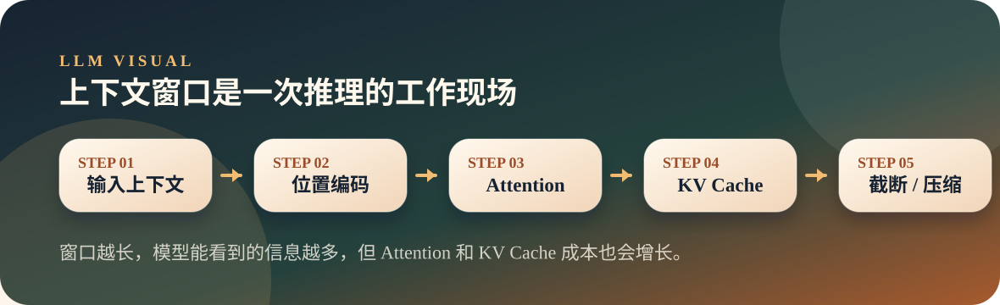
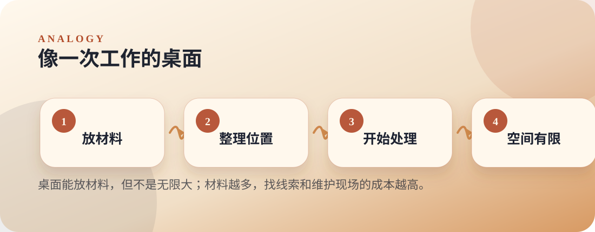

从零开始理解大模型
08. 上下文窗口：模型的“工作记忆”有多大
上下文窗口决定模型一次能看到多少 token；窗口越长，位置编码、Attention 计算和 KV Cache 压力越大。
ContextPositionKV Cache
Thesis
文章主旨
上下文窗口决定模型一次能看到多少 token；窗口越长，位置编码、Attention 计算和 KV Cache 压力越大。
为什么模型不能无限记住所有对话？因为每次推理都要把上下文作为输入处理，长度越大，计算和显存压力越明显。
Visual
两张图看懂
第一张图讲机制怎么流动，第二张图把抽象概念落到生活直觉。


Analogy
原文比喻
一次性工作台，不是长期记忆
文章把上下文窗口叫一次性工作台：窗口内的资料模型能看到，窗口外等于不存在；台子越大，Attention 和 KV Cache 的成本也越高。
对应到机制：窗口越长，模型能看到的信息越多，但 Attention 和 KV Cache 成本也会增长。
Explain
概念拆解
按下面三步讲，会比直接抛术语更顺：先建立直觉，再解释机制，最后落到本页结论。
Step 01
先定义边界
上下文窗口是一次推理能看到的 token 范围，不在窗口里的内容模型无法直接使用。
Step 02
再看成本
窗口越长，Attention 计算和 KV Cache 占用越高，所以长上下文不是免费能力。
Step 03
最后接实践
摘要、检索和记忆机制，本质上都是在帮模型管理这个有限工作现场。
本页要带走的三句话
- 上下文窗口是模型一次推理能看到的 token 上限。
- 长上下文不是免费能力，会带来计算、显存和检索质量问题。
- Agent 的记忆、压缩、检索都在处理上下文窗口的现实边界。
Small Check
可选小实验
从位置编码、超长输入和 KV Cache 三个角度观察上下文窗口的边界。 实验只用于观察现象，不作为本页主线。
可选实验命令
python3 llm/08-context-window/context_window.py- GPT-2 的位置编码表会显示最大位置为 1024。
- 超出窗口时会触发截断或范围错误，说明窗口不是抽象概念。
- KV Cache 显存估算会展示上下文长度增长带来的直接成本。
- 同一个目标句子放在更长填充文本后，预测也可能受影响。
Extend
继续阅读
教学页以讲清文章为主；完整原文与配套脚本保留在仓库中，方便分享后继续查阅。